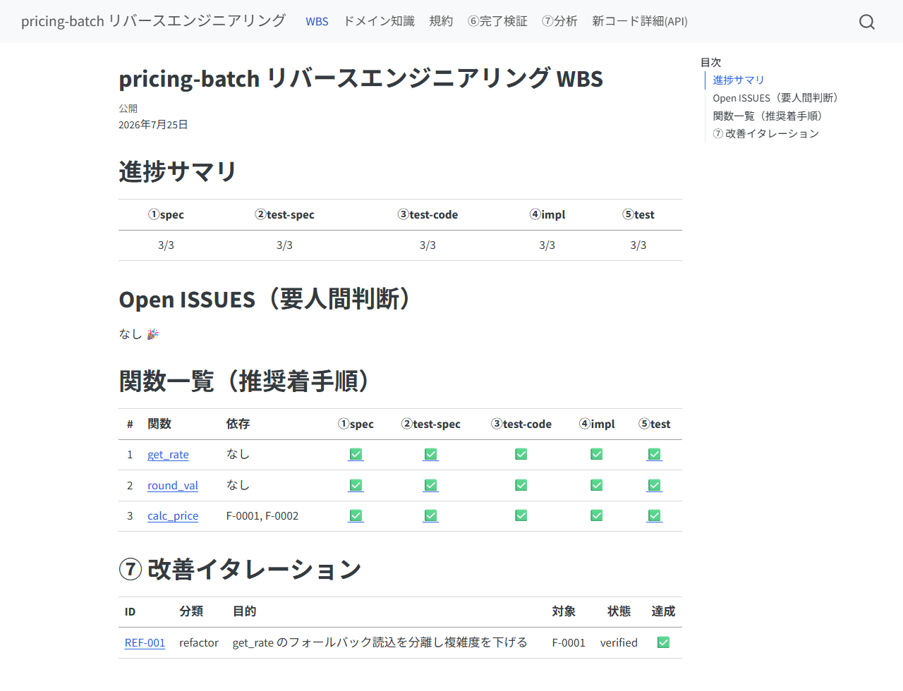
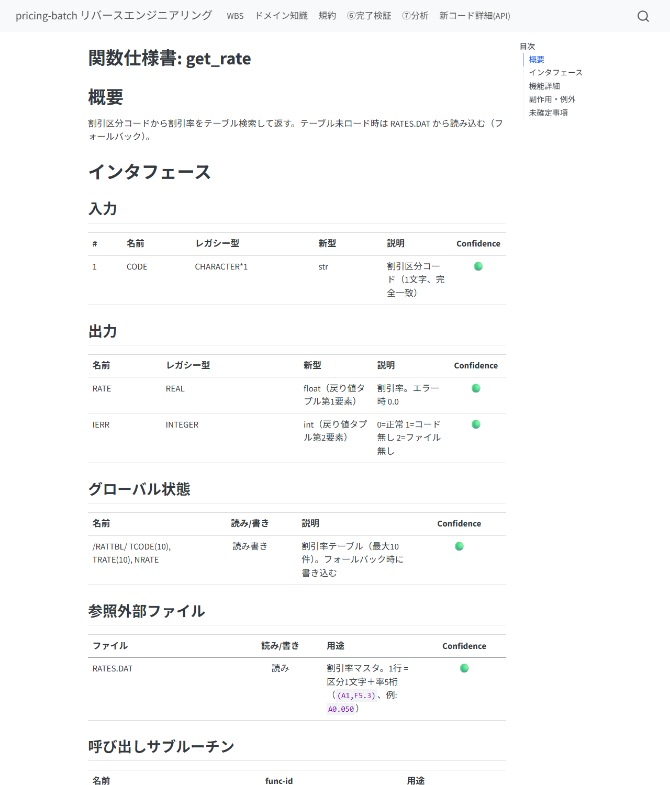
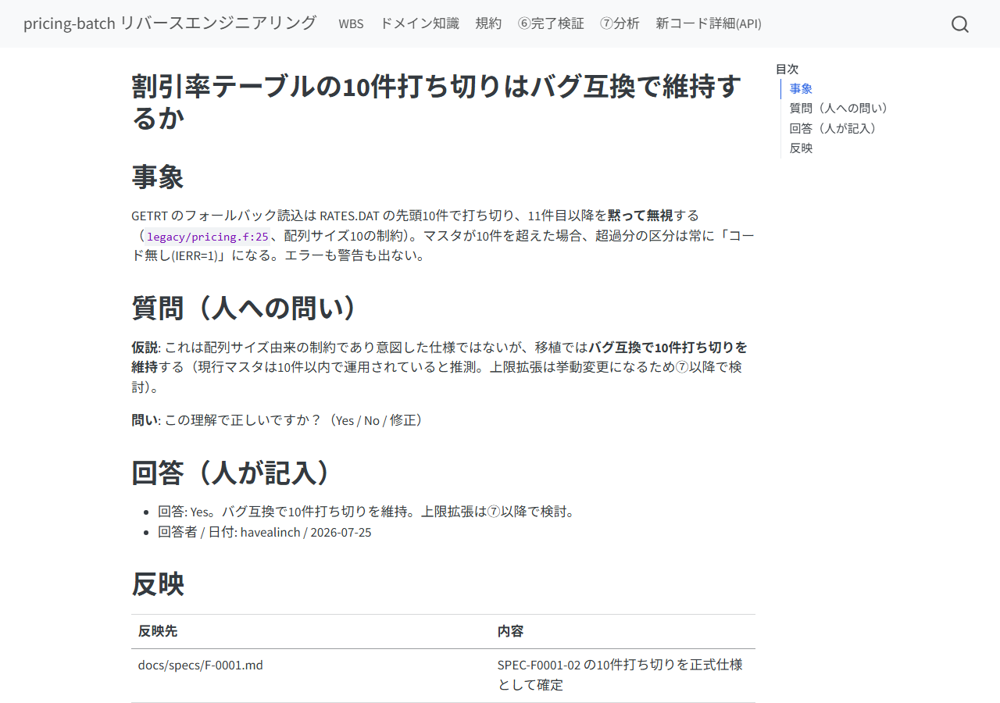
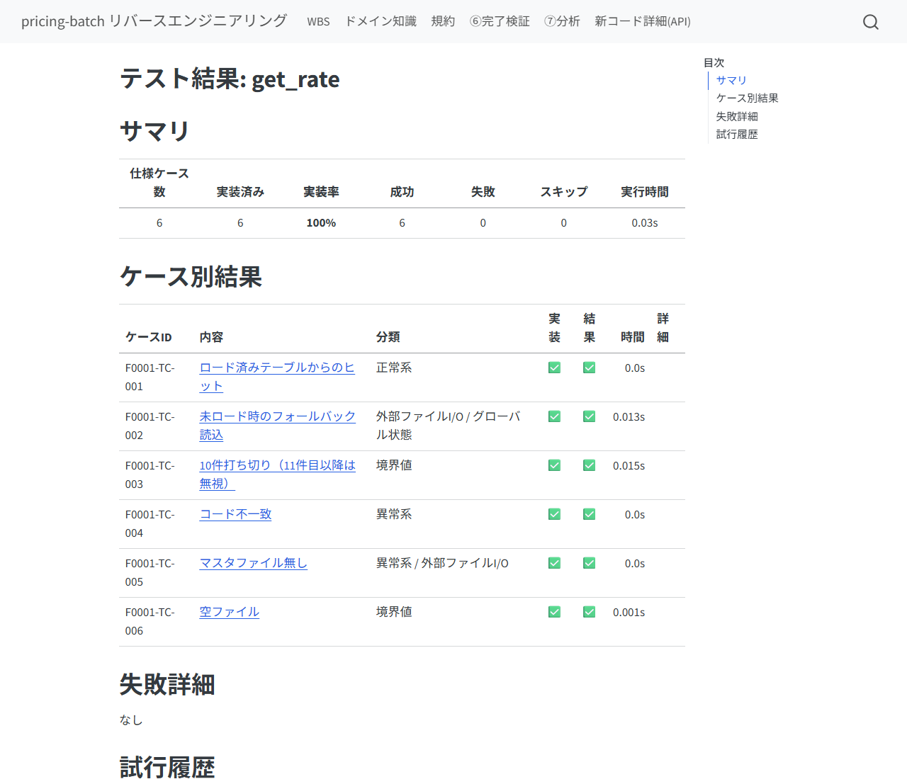
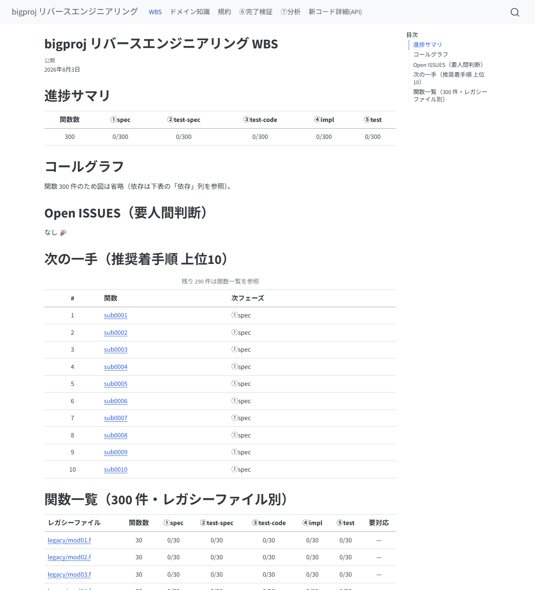
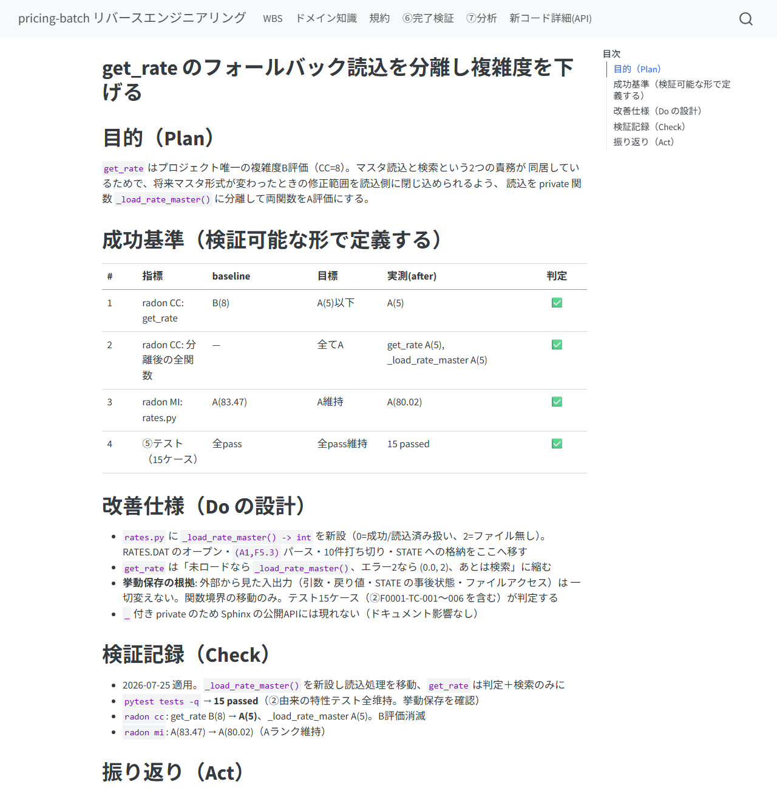

legacy-reverse
⓪から⑦まで進めながら覚える
レガシーコード（Fortran 等）を Python へ仕様ベースで移植するパイプライン。
このスライドは実際に1関数を進める順番どおりに、あなたの操作だけを説明する。
→ キーで次へ / ← で戻る / 右上「一覧表示」で通し読み
全体像 — あなたの仕事は4つだけ
…全関数が終わったら → ⑥ 完了検証 → ⑦ 分析・改善
| あなたの仕事 | 具体的には |
|---|---|
| トリガを引く | 各フェーズをスラッシュコマンドで起動する（AIは勝手に進まない） |
| 質問に答える | ISSUE（仮説＋Yes/No形式）に回答する |
| 承認する | ①の仕様書・②のテスト仕様に OK を出す |
| 裁定する | ⑤でテストが落ちたとき原因の種類を決める |
役割分担: AIが書く、機械（スクリプト）が検証する、人が決める。 コードや文書をあなたが直接書く必要は基本ない。
セットアップ（最初に1回だけ）
- skill を対象プロジェクトへコピー:
cp -r skills/legacy-reverse <project>/.claude/skills/ cp -r skills/legacy-reverse/skills/* <project>/.claude/skills/ - hook を登録（必須）:
hooks/settings-example.jsonの内容を<project>/.claude/settings.jsonへマージ。 「AIがテストを書き換えて通す」事故を仕組みで防ぐ安全装置 - MCP サーバを登録（推奨）:
<project>/.mcp.jsonにmcp-servers/legacy-reverse-mcp/server.pyを追加。許可プロンプトが減る - Quarto 未導入なら
qtpdf.py install（管理者権限不要）。pip install pytest sphinx sphinx-rtd-theme
/legacy-reverse と打つ。
セットアップ状態を確認して、次にやることを案内してくれる。⓪ 解析 — 関数リストを作る
/legacy-0-analyze- レガシーコードの場所と言語 / 新しいパッケージ名
- 型対応表（例:
REAL*8→float）と命名規則 → 規約（conventions.md）として提示されるので OK を出す
関数の列挙そのものは 静的解析プログラムが機械抽出する（Fortran）。 引数・COMMON・呼び出し関係・外部ファイルまで自動で、AIは説明の充填だけを行う。
- 完了のサイン: 関数一覧（functions.json）と WBS サイトができ、 関数数・循環の有無・推奨着手順が報告される
- 数え漏れは2系統カウントの突合で機械検知。不明点は ISSUE としてあなたに来る
- 途中でやり直しても安全: 再実行はマージ動作（関数IDは変わらない）
WBS — 進捗のホーム画面
⓪が終わると HTML の進捗サイトができる。以後、全フェーズの最後に自動更新される。
python -m http.server 8765 --directory docs/_site
トップ = 進捗サマリ・あなたへの質問（Open ISSUES）・関数一覧・コールグラフ
| 記号 | 意味 | あなたの対応 |
|---|---|---|
| ✅ / ▲ / ☐ | 完了 / 作業中 / 未着手 | なし（眺めるだけ） |
| ⛔ | 裁定待ちで停止中 | ISSUE に回答する（最優先） |
| ⚠ | 上流が改訂され要再確認 | 該当フェーズの再生成を指示 |
① 関数仕様書 — 最初の承認ゲート
/legacy-1-spec F-0001AIがレガシー原文を読み、仕様書を書く。各項目には Confidence（🟢確認済 / 🟡推測 / 🔴仮定）と根拠の行番号が付く。

ISSUE の答え方 — 白紙の質問は来ない
AIが判断に迷うと ISSUE を起票する。必ず「仮説＋Yes/Noで答えられる問い」の形。

- 答え方は2通り、どちらでも同じ: チャットで答える / ISSUE ファイルの「回答（人が記入）」欄に書く
- 回答はドメイン知識集（domain-knowledge.md）に転記され、同じ質問は二度と来ない
- 未回答の ISSUE は WBS の最上部に出続ける。急がなくてよいが、 ⛔ が付いた関数はあなたの回答待ちで止まっている
② テスト仕様書 — 2つ目の承認ゲート
/legacy-2-testspec F-0001AIが「①の仕様書だけ」からテストケースを設計する （レガシー原文は見ない = クリーンルーム）。
- ケース一覧（正常系・境界値・異常系…）と質問一覧を見る
- 期待値が決められないケース（⚠未確定）の質問に答える
- 問題なければ「OK」→ approved になる（⚠未確定が残ったままの承認は機械が拒否）
「全🟢仕様項目にテストがあるか」「①に無い仕様IDをでっち上げていないか」は トレーサビリティ突合で機械検証済み。あなたは期待値の妥当性だけを見る。
③ テストコード / ④ 実装 — 見守りフェーズ
/legacy-3-testcode F-0001
/legacy-4-impl F-0001この2つは基本的に見守るだけ。それぞれ独立に作られる:
- ③完了時にテストは freeze（ハッシュ記録）。以後の改変は hook が拒否し、 変更されれば WBS に ⚠ が出る
- ④のスタブ（空実装・TODO）は機械検知されるので「実装したふり」はできない
- ④が「①だけでは実装を決められない」と気づくと spec-gap ISSUE を起票して停止する → あなたは ISSUE に答えて①の改訂を指示するだけ（伝搬は自動検知）
⑤ テスト — 独立に作った両者を突き合わせる
/legacy-5-test F-0001
pass なら完了（WBS が ✅ になる）。fail のときだけ、あなたの出番:
| 分類 | 原因 | あなたの操作 |
|---|---|---|
| (a) 実装バグ | 実装が①を満たしていない | 何もしない（AIが修正→再実行を自走） |
| (b) テストのバグ | ③が②とズレている | ISSUE の証拠を見て承認 → ③再生成 |
| (c) 仕様が誤り | ②①自体が間違い | ISSUE で裁定 → ①改訂を指示 |
(b)(c) をAIが勝手にやることはない（テスト改変は hook が物理的に拒否）。
⑤ で ⛔ が出たら — 復帰は3ステップ
(a) の自動修正ループは3回で自動停止し、WBS に ⛔ と triage ISSUE が出る。 AIの失敗分析（何を試し、なぜ駄目で、(a)/(b)/(c) のどれと考えるか）が書かれている。
- ISSUE を読んで裁定し、回答欄（またはチャット）で答える
- AIが反映したら「
F-0001 をアンブロックして」と言う /legacy-5-test F-0001を再トリガ（試行回数は1から）
関数のループを回す — 次はどの関数？
1関数が ✅ になったら、次の関数で ①→⑤ を繰り返す。順番は迷わなくてよい:
- WBS の「次の一手」（依存の葉から並ぶ推奨着手順）に従う
- チャットなら
/legacy-reverseと打てば次の一手を提案してくる

数百〜2000関数の大規模でも、トップは「要対応・次の一手・ファイル別進捗」のダッシュボード（300関数の例）
/legacy-reverse と打つだけ。進捗はすべてファイル側にあり、1からやり直しにはならない。⑥ 完了検証 — 全関数が終わったら1回
/legacy-6-check- 全関数の ①〜⑤・ハッシュ連鎖・open ISSUE ゼロ・実装率100% を機械検証し、 ①②の根拠引用とトレーサビリティも総点検する
- fail: 「どの関数の何が足りないか」の作業リストが出る → 該当フェーズのコマンドで埋める（⑥の中で直すことはしない）
- pass: 最終成果物が出る — WBS/仕様書のHTMLサイト、 関数仕様書・テスト仕様書・テスト結果報告書の3冊のPDF、API詳細（Sphinx）
⑦ 分析・改善 — テスト資産を安全網に
/legacy-7-analyze移植完了後の高速化・リファクタリング。1施策 = 1票 = 1イタレーション。
- 代表ワークロード（実データ規模の入力）を用意する — 計測の質が決まる
- 施策票（目的・成功基準 baseline→目標）を承認する
- 適用は「テスト全pass維持」が絶対条件（挙動保存）。達成状況は WBS の ⑦表で ✅/❌/— がトレースできる

まとめ — 覚えるのはこれだけ
| 場面 | 操作 |
|---|---|
| 迷ったら・再開するとき | /legacy-reverse（状況と次の一手を教えてくれる） |
| フェーズを進める | /legacy-0-analyze 〜 /legacy-7-analyze ＋ 関数ID |
| 質問（ISSUE）が来たら | Yes/No で答える（チャット or 回答欄） |
| ⛔ を見つけたら | 裁定 → アンブロック → ⑤再トリガ |
| WBS を見る | python -m http.server 8765 --directory docs/_site |
- コマンド即引き: QUICKREF.md（1枚）
- 背景・トラブル対処の詳説: MANUAL.md / MANUAL.pdf